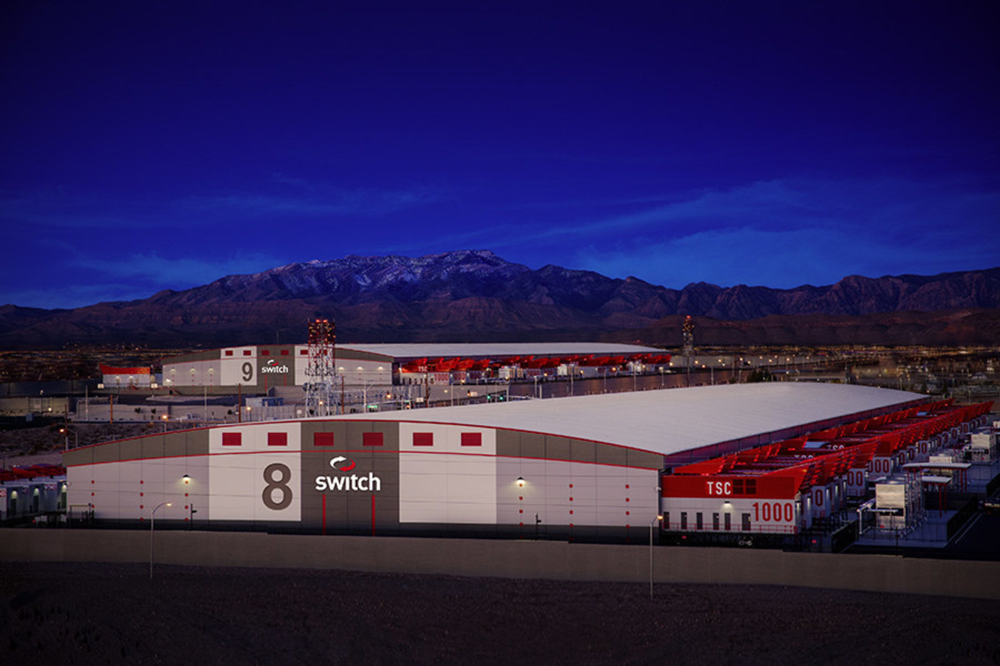
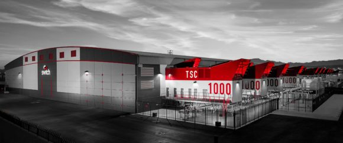
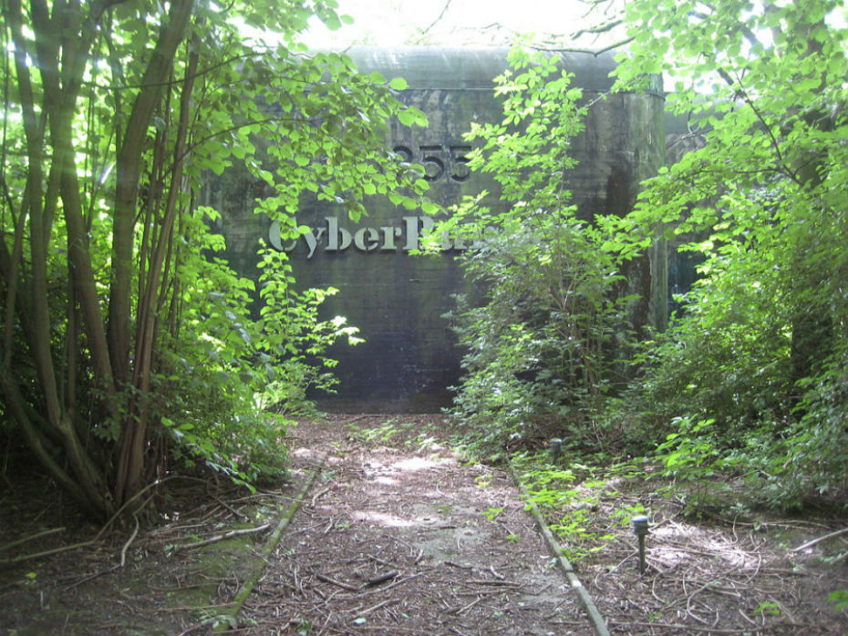
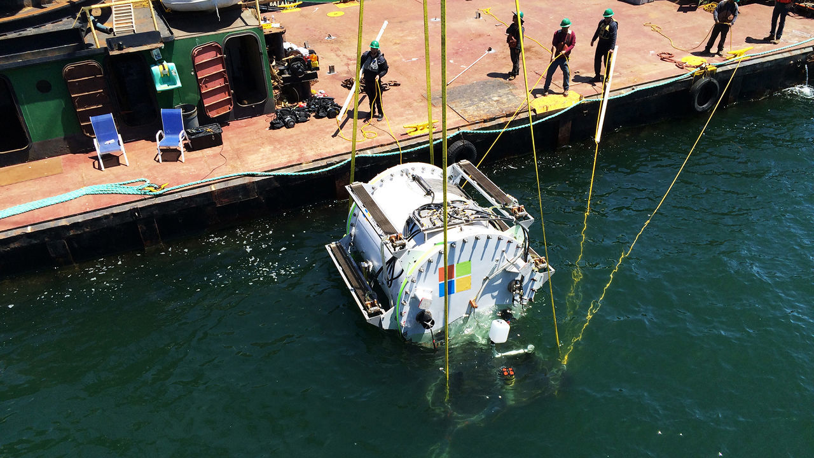
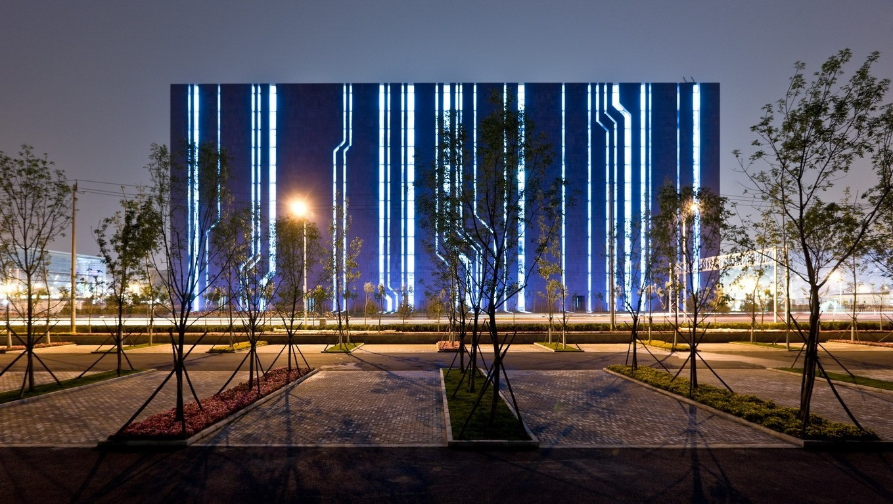

Интересные факты
Прародителем современных дата-центров стал компьютер 1945 года - Компьютерный центр The Electronic Numerical Integrator and Computer (ENIAC) использовался военными для хранения боевых кодов ядерного оружия, расчетов траекторий полета бомб, прогнозирования погоды на территории СССР. ENIAC похож на современные дата-центры: охраняемое помещение со стойками для блоков микросхем, соединительными проводами и резервными системами питания. Вес этого комьютера составлял 27тонн, а на строительство было потрачено 486 804 долларов.
Факт №1
В СССР первая компьютерная комната появилась в 1951 году
Компьютер, расположенный в ней, мог производить до 3 тысяч операций в минуту — для сравнения, iPhone X может выполнять 600 млрд операций в секунду. Устройство состояло из 6 тысяч деталей и сильно нагревалось. Инженерам даже пришлось разобрать потолок для охлаждения помещения. Площадь компьютерной комнаты составляла 60 метров в квадрате.
Факт №2
Первый коммерческий дата-центр использовался для бронирования билетов
В 1953 году менеджер по продажам IBM летел из Лос-Анджелеса в Нью-Йорк. Его соседом оказался президент авиакомпании American Airlines. В то время посадочные талоны выписывались от руки и хранились в коробках. При этом авиакомпании переживали бурный рост, поэтому устаревшая система хранения данных приводила к полному беспорядку. Случайная встреча в самолете привела к открытию первого коммерческого дата-центра для системы бронирования авиабилетов.
Факт №3
Скачок в развитии дата-центров связан с бумом доткомов
В 1980-х появляются первые небольшие персональные компьютеры. Однако настоящий рывок в развитии дата-центров случился благодаря буму доткомов, когда бизнес массово перевел свои процессы в интернет. Для того, чтобы обеспечить круглосуточную и бесперебойную работу, компании создавали отдельные комнаты с сетевым оборудованием — «серверные».
Факт №4
Самый большой дата-центр в мире находится в Неваде
Его построила компания Switch в 2015 году рядом с заводами Gigafactory, на которых выпускаются аккумуляторы для автомобилей Tesla. Это первое здание в составе комплекса дата-центров «Цитадель» — крупнейшего проекта в области хранения и обработки данных. Стоимость проекта составила 3 000 000 000 долларов. Площадь проекта равна 244 футбольным полям.
 Факт №5
Самый защищенный дата-центр находится в Нидерландах
Он находится в ядерном бункере, построенном в период холодной войны. Бункер состоит из четырех уровней над землей и одного подземного, содержит множество тоннелей и комнат. Подземный уровень защищен пятиметровым слоем бетонных стен и электромагнитных щитов, разработанных специально для военных целей. Щит защищает электронное оборудование в случае ядерного взрыва.
Факт №6
Теперь дата-центры строят где угодно
Инженеры научились строить дата-центры даже в неприспособленных для этого зданиях. Например, в Барселоне дата-центр построен в церкви. Стартап Nautilus Data Technologies построил дата-центр на барже, которая плавает в 30 км от Сан-Франциско. Корабль использует холодную воду океана для системы охлаждения серверов. В 2016 году Microsoft погрузила шкаф серверов в герметичном металлическом контейнере на дно океана — чтобы обеспечить небольшому дата-центру естественное охлаждение. Один из самых странных дата-центров был расположен на морской платформе времен Второй Мировой войны. Она располагалась в международных водах и на нее не распространялось действие законов об авторском праве.
Факт №7
3,9 млрд потребителей
К началу 2018 года 51% населения Земли подключен к интернету. Они общаются с друзьями, читают новости, отправляют письма, работают благодаря обширной сети дата-центров по всему миру. 966 млн сайтов в интернете. 390 гипермасштабируемых (более 5000 серверов) дата-центров в мире. 44% дата-центров расположены в США.
Факт №8
Дата-центр Digital Beijing
Один из самых крупных дата-центров в мире Digital Beijing расположен в Пекине. Уникальное 11-этажное здание китайцы построили для Олимпийских игр 2008 года в Пей-Чжу. В нем совмещены функции инфоцентра и автоматического техконтроля.
